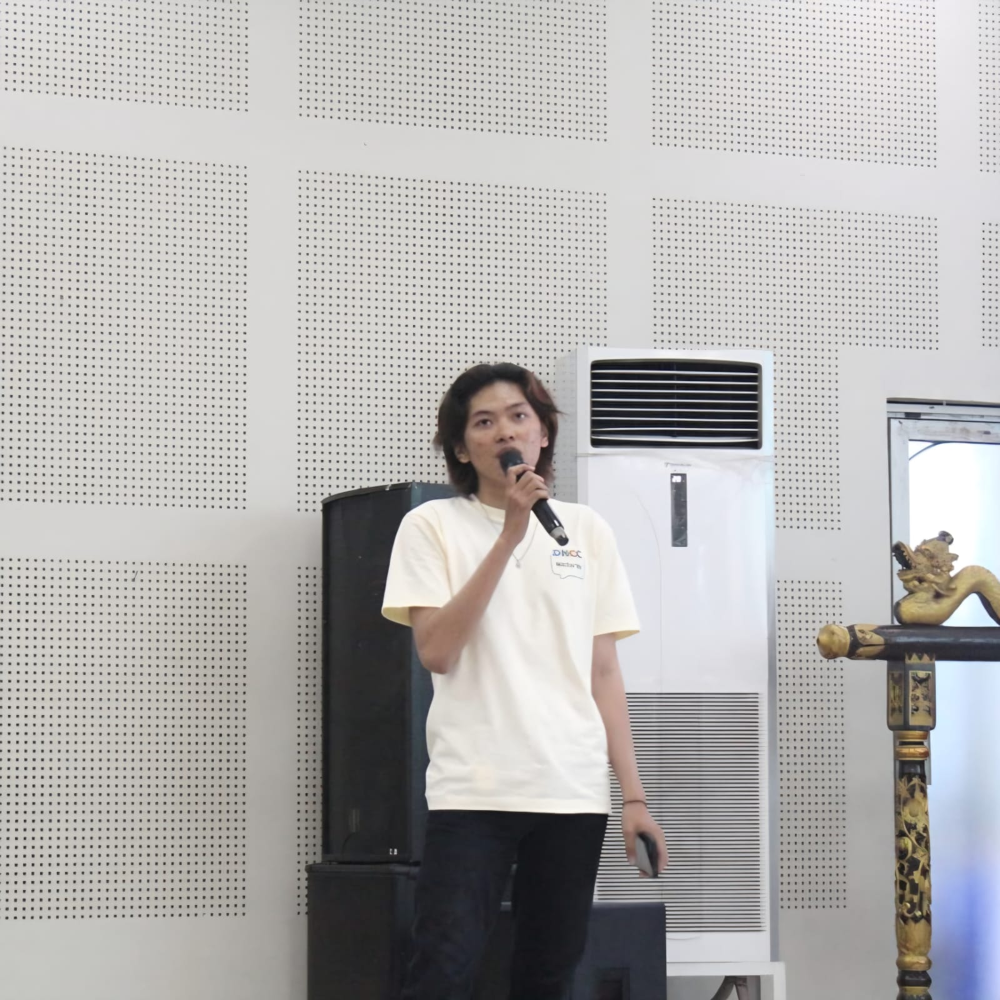
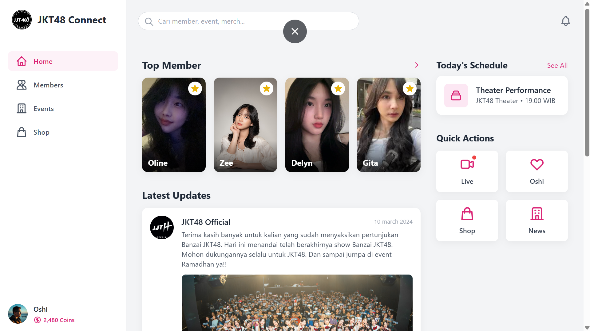
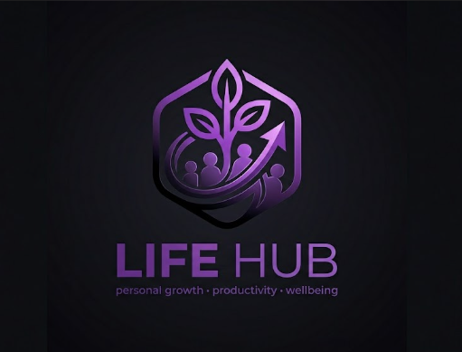
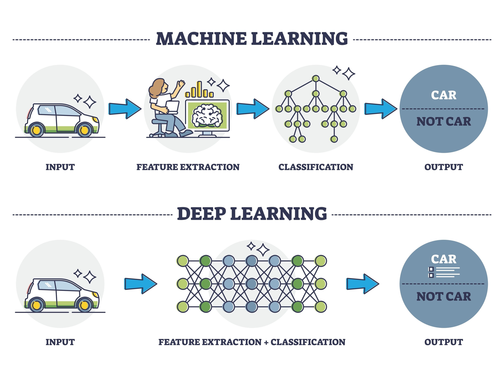
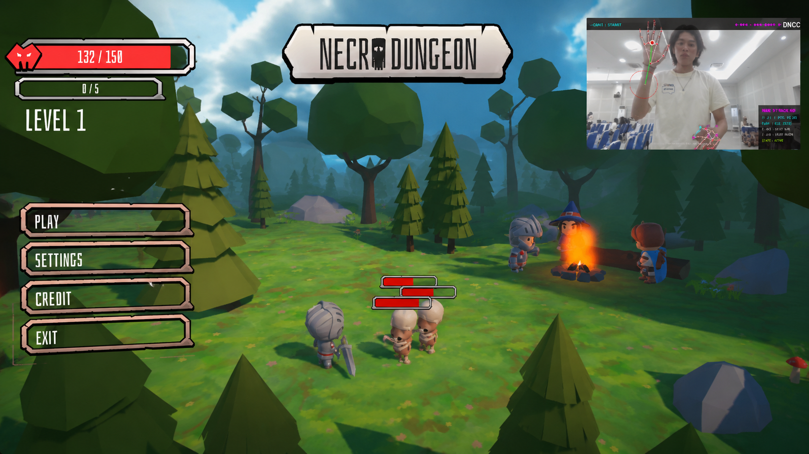

Halo, saya
Mahasiswa penuh semangat yang berfokus pada Data Science, Machine Learning, dan Computer Networking. Membangun solusi cerdas dari data yang kompleks.

Saya adalah mahasiswa aktif di bidang Teknologi Informasi yang memiliki passion besar terhadap Data Science, Machine Learning, dan Computer Networking. Saya percaya bahwa data adalah aset strategis yang paling berharga dalam mengakselerasi inovasi di era digital.
Selama perjalanan akademik, saya berkomitmen untuk menyeimbangkan penguasaan teori dengan implementasi praktis. Pengalaman profesional saya semakin diperkuat melalui program magang di PT Telkom Akses Simpang Lima, di mana saya terlibat langsung dalam proyek digitalisasi yang memberikan wawasan mendalam mengenai operasional teknis berskala industri.
Dedikasi saya telah dibuktikan sejak jenjang SMK, di mana saya berhasil meraih gelar Siswa Berprestasi serta mencatatkan prestasi sebagai peraih predikat Penyelesaian Uji Kompetensi Keahlian (UKK) Tercepat Kedua.
Saat ini, saya sangat antusias untuk terus membangun sistem cerdas yang solutif dan memberikan dampak positif bagi masyarakat, dengan fokus utama pada pengembangan analisis data tingkat lanjut dan sistem otomasi berbasis AI.
Perjalanan pendidikan formal yang membentuk fondasi keilmuan saya.
SD Yadika 3 — Kota Tangerang
SMP Negeri 24 Tangerang — Kota Tangerang
SMK Walisongo Semarang — Teknik Jaringan Komputer & Telekomunikasi
Universitas Dian Nuswantoro — S1 Fakultas Ilmu Komputer / Teknik Informatika
Pengalaman berorganisasi yang mengasah kepemimpinan dan kolaborasi saya.
Divisi Data Science
Aktif dalam pengembangan berbasis data, berkolaborasi dalam proyek data science, serta berkontribusi pada inisiatif komunitas untuk memperdalam pemahaman mengenai pengolahan dan analisis data.
Divis Data Science
saya berfokus pada analisis dan visualisasi data, mendalami konsep-konsep data science secara praktis, serta turut serta dalam program pengembangan kompetensi teknologi bagi anggota
-
Berpartisipasi aktif dalam berbagai kegiatan komunitas untuk memperluas jejaring profesional, mengikuti workshop teknologi, serta meningkatkan pemahaman mengenai ekosistem pengembangan perangkat lunak dan teknologi terkini
-
Mengembangkan disiplin diri, kerja sama tim, dan ketahanan fisik melalui partisipasi rutin dalam latihan dan kompetisi basket. Kegiatan ini melatih kemampuan kepemimpinan serta manajemen waktu di luar lingkungan akademis.
Perjalanan profesional dan internship yang telah saya jalani.
Technical Support Specialist Intern
Teknologi dan bidang yang saya kuasai dan terus saya kembangkan.
Karya nyata yang telah saya bangun dengan dedikasi penuh.

Proyek pengembangan web mobile-first dengan tema JKT48 untuk mempelajari fundamental antarmuka pengguna.


Model ML menggunakan Random Forest & XGBoost untuk memprediksi risiko stunting dengan akurasi 78.41%.

Sistem kontrol game revolusioner tanpa perangkat fisik. Menggunakan AI Hand Tracking untuk navigasi virtual analog (L-DRIVE) dan presisi bidikan absolut 1:1 (R-DRIVE).
Bukti komitmen saya dalam pengembangan kompetensi secara berkelanjutan.
2025
Lihat Sertifikat →Saya terbuka untuk diskusi, peluang magang, kolaborasi proyek, atau sekadar berbagi ide seputar teknologi dan data. Jangan ragu untuk menghubungi saya!